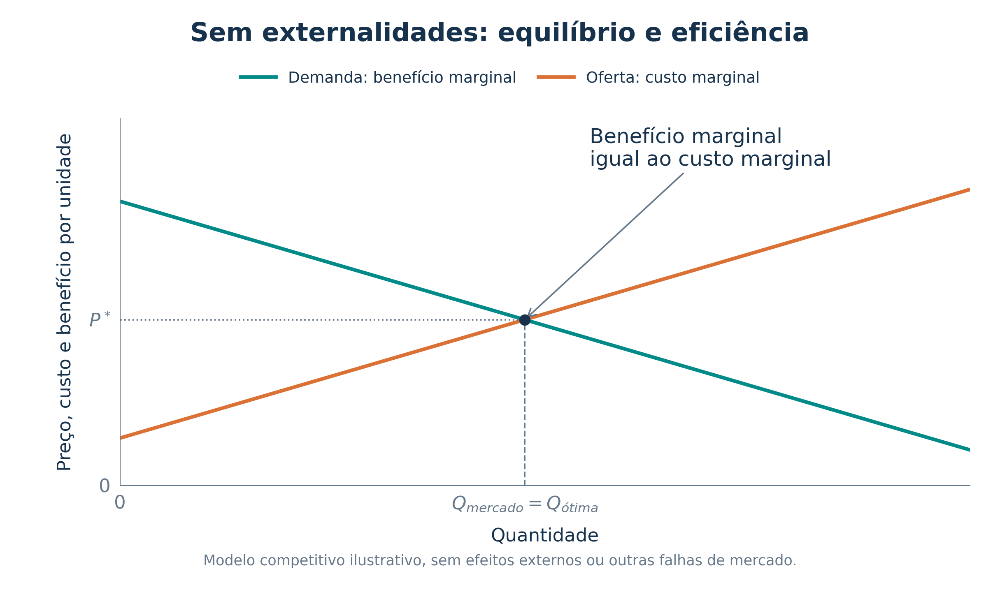
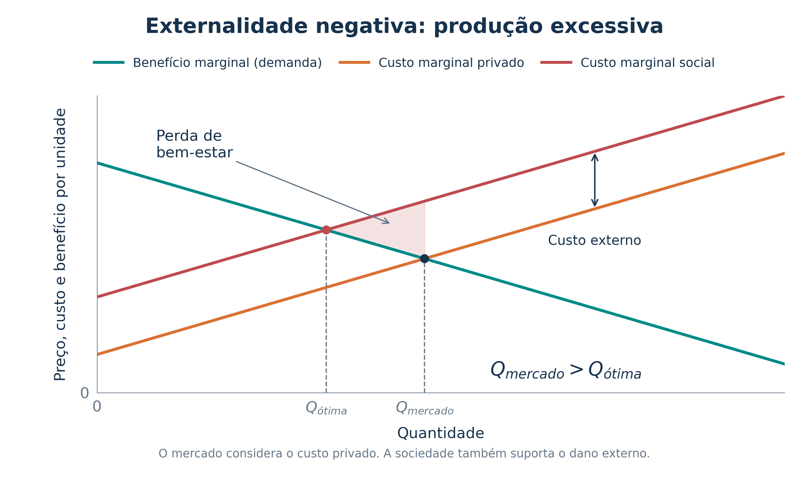
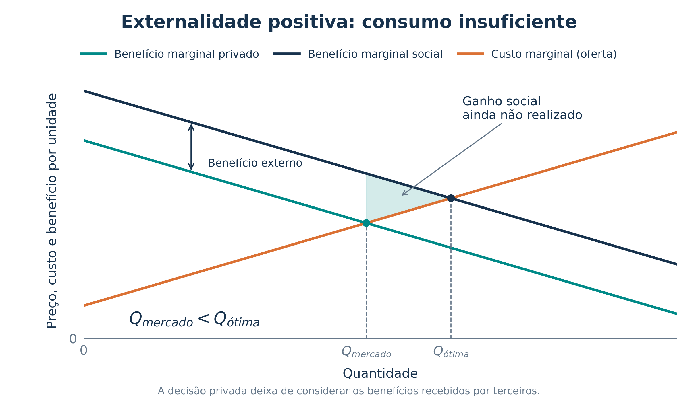
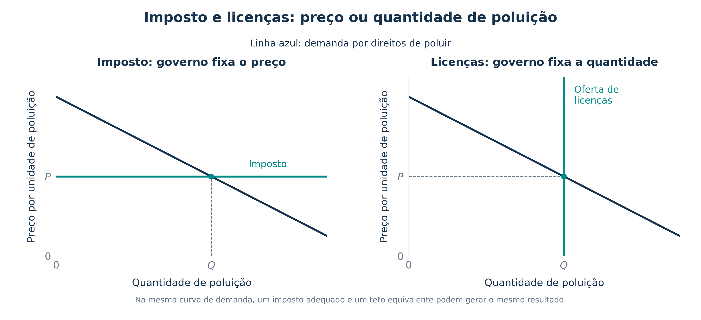

Aula 14 - Externalidades
01 - Introdução: efeitos que ultrapassam a transação
02 - Externalidades positivas e negativas
03 - Custos e benefícios privados e sociais
04 - O mercado sem externalidades
05 - Externalidade negativa e produção excessiva
06 - Internalizar a externalidade
07 - Externalidade positiva e consumo insuficiente
08 - Conhecimento, inovação e patentes
09 - Regulação: comando e controle
10 - Impostos e subsídios corretivos
11 - Gasolina, trânsito e emissão de carbono
12 - Licenças negociáveis para poluir
13 - Imposto ou licenças: preço e quantidade
14 - Custos e benefícios da proteção ambiental
15.0 - Teorema de Coase Introdução
15 - Normas sociais, contratos e integração
17 - Negociação e distribuição dos direitos
18 - Por que os acordos podem falhar
Uma decisão pode afetar pessoas que não participaram da compra ou da venda. Quem considera esses efeitos ao decidir quanto produzir ou consumir?
Uma externalidade é o efeito de uma atividade sobre o bem-estar de terceiros, sem pagamento ou compensação correspondente por esse efeito.
| Tipo | Efeito sobre terceiros | Exemplo |
|---|---|---|
| Negativa | Impõe um custo | Fumaça de uma fábrica prejudica os moradores próximos |
| Negativa | Impõe um custo | Barulho de uma festa incomoda os vizinhos |
| Positiva | Gera um benefício | Restauração de um prédio histórico valoriza a experiência de quem passa pela rua |
| Positiva | Gera um benefício | Uma descoberta facilita pesquisas e aplicações por outras pessoas |
Pode ocorrer na produção ou no consumo. O ponto central é a presença de um efeito externo que a decisão privada não incorpora adequadamente.
Cuidado na prova: o salário recebido pelo empregado é uma remuneração contratada. O lucro da empresa é um resultado privado. Esses valores, por si sós, não são externalidades positivas.
Privado se refere ao custo ou benefício considerado diretamente por quem decide. Social inclui também os efeitos sobre terceiros.
| Conceito | Significado |
|---|---|
| Custo marginal privado (\(CMg_P\)) | Custo de produzir uma unidade adicional para o produtor |
| Custo marginal externo (\(CMg_E\)) | Dano adicional imposto a terceiros |
| Benefício marginal privado (\(BMg_P\)) | Benefício da unidade adicional para o consumidor |
| Benefício marginal externo (\(BMg_E\)) | Benefício adicional recebido por terceiros |
No exemplo de externalidade negativa na produção:
\[CMg_S=CMg_P+CMg_E.\]
No exemplo de externalidade positiva no consumo:
\[BMg_S=BMg_P+BMg_E.\]
O subscrito \(S\) indica o valor social. A quantidade eficiente iguala o benefício marginal social ao custo marginal social: \(BMg_S=CMg_S\).

No modelo competitivo, a demanda representa o benefício marginal dos compradores e a oferta representa o custo marginal dos produtores.
Sem efeitos externos, os valores privados coincidem com os sociais. O equilíbrio maximiza o excedente total de compradores e vendedores. Esse resultado depende das hipóteses do modelo, como concorrência e ausência de outras falhas de mercado.
Ligação com a prova: o Primeiro Teorema do Bem-Estar relaciona equilíbrio competitivo e eficiência. A presença de externalidades compromete as hipóteses que sustentam essa garantia.
Imagine que a produção de alumínio emita fumaça que prejudica moradores. O custo da fábrica não inclui integralmente esse dano.

Leitura do gráfico: o mercado iguala demanda e custo privado. A sociedade deve comparar a demanda com o custo social, que inclui a poluição. Por isso, \(Q_{mercado}>Q_{ótima}\).
Nas unidades produzidas além de \(Q_{ótima}\), o custo social supera o benefício. A área destacada é a perda de bem-estar, também chamada de peso morto. Reduzir esse excesso melhora a alocação dos recursos.
Internalizar significa mudar os incentivos para que os agentes levem em conta os efeitos externos ao decidir.
Um imposto corretivo sobre a atividade poluidora faz o produtor considerar um custo que antes recaía sobre terceiros. Quando bem calibrado, aproxima a quantidade de mercado da quantidade eficiente.
Exemplo numérico complementar, usado nos gráficos:
| Informação | Valor no exemplo |
|---|---|
| Benefício marginal | \(120-Q\) |
| Custo marginal privado | \(20+Q\) |
| Dano marginal externo | 30 por unidade |
| Custo marginal social | \(50+Q\) |
Sem correção: \(120-Q=20+Q\), portanto \(Q=50\). Considerando o dano: \(120-Q=50+Q\), portanto \(Q=35\).
Um imposto de 30 por unidade reproduz esse custo externo constante e conduz a \(Q=35\). A arrecadação é \(30\times35=1.050\), mas o objetivo econômico da medida é corrigir o incentivo, não maximizar a arrecadação.
O benefício de estudar inclui ganhos privados, como oportunidades de trabalho, e pode incluir efeitos externos, como a difusão de conhecimentos.

Leitura: a decisão privada usa \(BMg_P\). A sociedade também recebe \(BMg_E\). Assim, \(BMg_S>BMg_P\) e \(Q_{mercado}<Q_{ótima}\).
Um subsídio corretivo pode estimular a atividade. No exemplo do gráfico, o benefício externo é 30 por unidade, e a quantidade eficiente é 65, em vez das 50 unidades escolhidas sem correção.
Distinção: a remuneração maior do próprio estudante é benefício privado. A contribuição de seu conhecimento para terceiros pode ser uma externalidade positiva.
Uma firma que pesquisa pode gerar conhecimentos que outras firmas aproveitam. Esse transbordamento de conhecimento é uma externalidade positiva quando a firma inovadora não recebe todo o benefício gerado.
| Resposta possível | Como altera os incentivos |
|---|---|
| Apoio à pesquisa e subsídios | Reduz o custo privado de atividades que beneficiam terceiros |
| Política industrial | Procura estimular atividades com efeitos tecnológicos relevantes |
| Patentes | Permitem apropriar parte do retorno da invenção por um período limitado |
Dificuldade destacada no livro: identificar quais atividades geram os maiores benefícios externos e medir esses benefícios. Incentivos mal desenhados podem favorecer grupos politicamente influentes.
Patentes: a possibilidade de licenciamento e recebimento de royalties estimula a pesquisa. A exclusividade também limita o uso imediato da invenção por outros agentes. Existe uma escolha entre incentivo à criação e acesso ao conhecimento.
Classifique como externalidade positiva, externalidade negativa ou resultado privado da transação.
Pergunta adicional: no caso 2, o mercado tende a produzir mais ou menos que a quantidade socialmente desejável?
No caso 2, o custo privado fica abaixo do social, levando a produção excessiva, nas condições do modelo estudado.
Atividade autoral de fixação.
Nas políticas de comando e controle, o governo exige ou proíbe comportamentos diretamente.
| Instrumento | Exemplo |
|---|---|
| Proibição | Impedir o descarte de substâncias tóxicas em uma fonte de água |
| Limite de emissão | Estabelecer um máximo de poluentes por fábrica |
| Exigência tecnológica | Determinar a instalação de equipamento de controle |
A regulação pode ser apropriada para impedir danos graves e fixar padrões de proteção. Sua efetividade depende de informação, monitoramento e cumprimento das regras.
Limitação econômica: exigir a mesma redução de todas as firmas pode ser caro quando seus custos de reduzir a poluição são diferentes. Também pode haver pouco incentivo para superar um padrão mínimo, se a regra não trouxer benefícios adicionais para essa redução.
Os impostos pigouvianos, associados a Arthur Pigou, procuram corrigir externalidades negativas. Subsídios corretivos podem estimular atividades com externalidades positivas.
Calibração no modelo: o imposto por unidade deve corresponder ao dano marginal externo na quantidade eficiente. O subsídio deve refletir o benefício marginal externo. Não se confunde valor por unidade com dano total.
Por que um imposto sobre emissões pode reduzir o custo da correção?
| Firma | Custo de evitar uma tonelada adicional | Imposto por tonelada emitida | Incentivo |
|---|---|---|---|
| A | 20 | 50 | Evitar a emissão custa menos que pagar o imposto |
| B | 80 | 50 | Para essa tonelada, pagar custa menos que evitar a emissão |
Valores ilustrativos. A comparação se repete para cada unidade adicional.
Cada firma reduz emissões enquanto o custo marginal de redução for menor que o imposto. Isso concentra a redução onde ela custa menos e mantém o incentivo à inovação, inclusive depois de cumprir um padrão.
Aplicação positiva: pagamentos pela preservação de nascentes podem remunerar benefícios ambientais que chegam a usuários da água.
O livro usa os tributos sobre gasolina para discutir três efeitos externos associados ao uso de veículos:
| Efeito | Custo para terceiros |
|---|---|
| Congestionamento | Tempo adicional imposto aos demais usuários da via |
| Acidentes | Riscos e custos que não são integralmente assumidos por quem dirige |
| Poluição | Danos decorrentes das emissões locais e dos gases de efeito estufa |
Cobrar pelo combustível pode desestimular seu consumo e incentivar alternativas. Entretanto, é uma forma indireta de tratar alguns danos. Congestionamentos, por exemplo, variam por horário e local.
O capítulo também apresenta o imposto sobre carbono e a possibilidade de usar sua receita para reduzir outros tributos ou compensar famílias. O exemplo da Colúmbia Britânica pertence a um texto de 2012, reproduzido na edição do livro. Ele ilustra o mecanismo, sem descrever a política atual.
Ideia central: a arrecadação é uma transferência. O ganho de eficiência vem de incorporar os danos externos às decisões e reduzir emissões cujo custo social supera o benefício.
O governo define um teto de emissões e emite licenças correspondentes. As firmas podem negociar essas permissões.
Exemplo do capítulo: após a regulação, duas fábricas podem emitir 300 toneladas cada. Uma negociação permite a seguinte mudança:
| Fábrica | Antes da troca | Depois da troca |
|---|---|---|
| Papel | 300 | 200 |
| Aço | 300 | 400 |
| Total de emissões | 600 | 600 |
A fábrica que reduz emissões a menor custo pode vender licenças. Aquela cujo custo de redução é maior pode comprá-las. O teto permanece igual, mas o custo total de cumprir a meta pode diminuir.
Mesmo uma licença recebida gratuitamente tem custo de oportunidade: usá-la significa abrir mão da receita de sua venda.
O exemplo supõe que uma tonelada tenha o mesmo efeito externo, independentemente da fábrica. Danos que variam por local exigem cuidado no desenho das permissões e na fiscalização.

| Instrumento | O governo escolhe | O mercado determina |
|---|---|---|
| Imposto | Preço por unidade de poluição | Quantidade emitida |
| Licenças | Quantidade total permitida | Preço das permissões |
Na mesma curva de demanda, um imposto adequado e um teto equivalente podem produzir o mesmo resultado. Com informação incompleta, não se sabe necessariamente qual imposto alcançará uma meta exata de emissão.
O livro cita como exemplo histórico o sistema de permissões de dióxido de enxofre dos Estados Unidos, associado ao controle da chuva ácida.
Reduzir a poluição traz benefícios, mas também utiliza recursos que poderiam ter outros usos. A análise econômica compara essas duas partes.
A pergunta é marginal: quanto custa reduzir mais uma unidade de poluição e qual dano essa redução evita?
Objeção discutida no capítulo: cobrar pela emissão parece permitir poluir mediante pagamento. A resposta econômica enfatiza que impostos e licenças tornam o dano relevante para a decisão e podem reduzir o custo de alcançar a proteção desejada.
Como a qualidade ambiental é valorizada, reduzir o custo de protegê-la pode tornar metas mais ambiciosas viáveis. Medir os danos, definir as metas e considerar quem recebe custos e benefícios continuam sendo essenciais.
Identifique a política e explique seu incentivo.
Desafio: qual instrumento fixa diretamente o preço de poluir? Qual fixa a quantidade total de permissões?
O item 2 fixa o preço. O item 3 fixa a quantidade de permissões.
Atividade autoral de fixação.
As partes também podem criar soluções privadas para os efeitos externos.
| Solução | Como funciona |
|---|---|
| Normas morais e sanções sociais | Estimulam considerar os outros, como evitar lixo na rua |
| Doações e organizações sem fins lucrativos | Financiam atividades com benefícios coletivos |
| Integração de atividades | Uma mesma organização passa a considerar custos e benefícios antes separados |
| Contratos | As partes combinam condutas, quantidades e compensações |
Exemplo do livro: abelhas de um apicultor polinizam as árvores de um produtor de maçãs. As flores também fornecem néctar para a produção de mel.
Um contrato pode coordenar o número de colmeias e de árvores, além de eventuais pagamentos. A integração das duas atividades em uma única firma é outra possibilidade de internalizar os benefícios externos.
O teorema de Coase mostra que as partes podem negociar uma solução eficiente para uma externalidade quando conseguem negociar e executar acordos sem custos de transação, com direitos bem definidos.
Condições centrais do modelo:
Resultado: há espaço para acordo quando o ganho total da mudança supera a perda que ela provoca. Uma compensação pode repartir esse ganho.
O teorema permite alcançar eficiência sob diferentes distribuições iniciais de direitos. Isso não torna a distribuição irrelevante: ela afeta quem paga, quem recebe e a distribuição do bem-estar.
Adaptação do exemplo do capítulo: Daniel realiza uma atividade barulhenta. O benefício para ele é 500, enquanto o dano para Júlia é 800. Considere que interromper a atividade elimina os dois efeitos.
| Situação | Resultado |
|---|---|
| Daniel pode continuar a atividade | Júlia pode oferecer 600 para que ele a interrompa |
| Ganho de Daniel com o acordo | Recebe 600 e abre mão de 500: ganha 100 |
| Ganho de Júlia com o acordo | Evita dano de 800 e paga 600: ganha 200 |
| Ganho conjunto | 300, independentemente do pagamento escolhido entre 500 e 800 |
Se Júlia tiver o direito ao silêncio, a atividade será interrompida sem precisar desse pagamento. O resultado eficiente permanece, mas a distribuição dos ganhos muda.
Outro cenário: se o benefício for 1.000 e o dano 800, manter a atividade gera ganho líquido de 200. Com direito ao silêncio de Júlia, um pagamento de 900 poderia tornar a continuidade vantajosa para ambos.
São valores ilustrativos em unidades monetárias, sem custos de transação nem efeitos de renda sobre as avaliações do exemplo.
Custos de transação são os custos de chegar a um acordo e de fazê-lo valer. Incluem negociação, elaboração de contratos e fiscalização.
| Obstáculo | Consequência |
|---|---|
| Custos de transação elevados | Podem consumir o ganho que o acordo produziria |
| Dificuldade de acordo | Cada parte pode esperar uma proposta melhor |
| Muitos envolvidos | Fica difícil coordenar e representar todos os afetados |
| Dificuldade de informação ou cumprimento | As partes podem discordar sobre o dano ou não cumprir o combinado |
No exemplo anterior, o ganho conjunto era 300. Se negociar e executar o acordo custar 400, não há ganho líquido que sustente essa solução.
Caso do capítulo: reclinar uma poltrona de avião pode beneficiar quem está à frente e incomodar quem está atrás. Mesmo com direitos definidos, o desconforto de negociar com um desconhecido pode impedir a solução.
Quando a negociação privada falha, a ação coletiva ou a política pública pode ajudar. Sua escolha também deve considerar informação, custos e capacidade de implementação.
| Situação | Resultado privado no modelo | Possíveis respostas |
|---|---|---|
| Externalidade negativa | Atividade acima da quantidade eficiente | Imposto corretivo, regulação, licenças ou acordo |
| Externalidade positiva | Atividade abaixo da quantidade eficiente | Subsídio, contrato, apoio à pesquisa ou remuneração do benefício |
Para resolver questões:
Pigou: impostos e subsídios corretivos ajudam a internalizar efeitos externos. Coase: negociação pode produzir eficiência sob condições adequadas, mas custos de transação podem impedir o acordo.
O objetivo é aproximar as decisões da condição \(BMg_S=CMg_S\), considerando também o bem-estar de quem está fora da transação.
12 exercícios: seis de múltipla escolha e seis de verdadeiro ou falso. Os itens 8 a 12 são desdobramentos identificados de alternativas de questões reais. Não correspondem a cinco questões autônomas nas provas originais.
As redações estão adaptadas e abreviadas para a aula. Nos itens de julgamento, certo = verdadeiro e errado = falso.
Ir ao gabarito · Ir às resoluções
Cebraspe | Caesb | Analista de Suporte ao Negócio, Economista | 2025 | questão original 40. Adaptação.
Uma fábrica lança dejetos em um rio. A cidade passa a gastar mais com o tratamento da água. Julgue as afirmações:
I. O custo adicional de tratamento é uma externalidade negativa da produção.
Os salários pagos aos trabalhadores são uma externalidade positiva.
Uma cobrança por tonelada de dejetos pode incentivar a instalação de filtros.
Nenhuma está correta.
Apenas I e II estão corretas.
Apenas I e III estão corretas.
Apenas II e III estão corretas.
Todas estão corretas.
Prova oficial · Gabarito definitivo
FGV | ALEGO | Analista Legislativo, Economista | 2026 | tipo 1 | questão original 57. Adaptação.
Sobre externalidades negativas e formas de correção, assinale a correta.
A firma poluidora enfrenta custo marginal privado maior que o social e tende a produzir pouco.
O imposto pigouviano é um subsídio ao poluidor para compensar seus custos de redução da poluição.
Direitos bem definidos e possibilidade de troca permitem criar um mercado de direitos de poluir e incorporar o custo externo às decisões, sob condições adequadas de desenho e funcionamento.
Recursos de acesso livre tendem a ser subutilizados por falta de incentivo para usá-los.
Externalidades existem apenas no consumo, sem afetar a eficiência da produção.
Prova oficial · Gabarito definitivo
FGV | CGE-SC | Auditor do Estado, Economia | 2023 | tarde, tipo 1 | questão original 23. Adaptação com esclarecimento da alternativa C.
Uma externalidade negativa implica que:
O custo marginal social da produção é menor que o custo marginal privado.
O custo adicional da produção que recai sobre terceiros, sem pagamento pela firma, é nulo.
A garantia de eficiência do equilíbrio competitivo, associada ao Primeiro Teorema do Bem-Estar, deixa de se aplicar sob essas condições.
O benefício marginal social do consumo é maior que o benefício marginal privado.
O custo adicional do consumo que recai sobre terceiros, sem pagamento pelo consumidor, é nulo.
Prova oficial · Gabarito definitivo retificado
FGV | AGENERSA | Especialista em Regulação | 2023 | tipo 1 | questão original 41. Adaptação. Edital de 2022, aplicação em 05/03/2023.
Qual opção não descreve uma forma adequada de intervenção justificada pela existência de externalidades?
Produção direta de bens e serviços que geram externalidades positivas.
Multas ou impostos para desestimular externalidades negativas.
Subsídios tributários para estimular atividades com externalidades positivas.
Regulação específica, como restrição ao fumo em ambientes fechados.
Imposição de provisão privada para tornar o bem rival no consumo.
Prova oficial · Gabarito definitivo
FGV | CGE-SC | Auditor do Estado, Economia | 2023 | tarde, tipo 1 | questão original 24. Adaptação. Considere o modelo usual de negociação com direitos definidos e negociáveis.
O teorema de Coase afirma que:
Um tributo sobre uma atividade com externalidade negativa é a solução que define o teorema.
Na ausência de custos de transação, a livre negociação pode alcançar uma alocação eficiente, qualquer que seja a distribuição inicial dos direitos.
A possibilidade de negociação necessariamente leva a uma quantidade de externalidade abaixo da quantidade eficiente.
Há sempre um único nível de externalidade negociado, independentemente das preferências e das condições da situação.
O resultado decorre de um custo suficientemente alto para excluir pessoas do acesso ao bem.
Prova oficial · Gabarito definitivo retificado
Cebraspe | Caesb | Analista de Suporte ao Negócio, Economista | 2025 | questão original 70. Adaptação conceitual.
Sobre pagamentos por serviços ambientais, assinale a correta.
Aplicam-se somente a áreas de proteção permanente, sem possibilidade de uso em paisagens produtivas.
Remuneram serviços ecossistêmicos que geram benefícios sociais e ambientais, integrando conservação e incentivos econômicos.
São necessariamente ineficazes porque sempre distorcem os sinais de mercado.
Somente o Estado pode financiar esses pagamentos.
Consideram apenas a biodiversidade e ignoram o valor da água para seus usuários.
Prova oficial · Gabarito definitivo
Cebraspe | Funpresp-EXE | Analista de Previdência Complementar, Área 5: Gestão de Investimentos e Riscos de Investimentos | 2025 | item original 56. Adaptação.
Uma falha de mercado decorrente de externalidade negativa pode ser corrigida por um imposto pigouviano adequadamente calibrado.
( ) Certo / verdadeiro ( ) Errado / falso
Prova oficial · Gabarito definitivo
FGV | TCE-TO | Auditor de Controle Externo, Ciências Econômicas | 2022 | tipo 1, questão original 52, alternativa A. Adaptação para julgamento.
A preocupação da montadora em cumprir os padrões legais de emissão, por si só, caracteriza a externalidade negativa da produção de automóveis.
( ) Verdadeiro ( ) Falso
Prova oficial · Gabarito definitivo da questão 52
FGV | TCE-TO | Auditor de Controle Externo, Ciências Econômicas | 2022 | tipo 1, questão original 52, alternativa E. Adaptação para julgamento.
Um imposto por unidade que faça o produtor considerar o custo externo da produção corresponde à lógica do imposto de Pigou.
( ) Verdadeiro ( ) Falso
Prova oficial · Gabarito definitivo da questão 52
Cebraspe | Caesb | Analista de Suporte ao Negócio, Economista | 2025 | questão original 61, alternativa D. Adaptação de alternativa para julgamento.
A solução baseada em impostos corresponde à teoria de Coase, enquanto a definição de direitos para lidar com a externalidade corresponde à solução de Pigou.
( ) Certo / verdadeiro ( ) Errado / falso
Prova oficial · Gabarito definitivo da questão 61
FGV | ALEGO | Analista Legislativo, Economista | 2026 | tipo 1 | questão original 57, alternativa E. Adaptação para julgamento.
Externalidades ocorrem somente no consumo e não afetam a eficiência das decisões de produção.
( ) Verdadeiro ( ) Falso
Prova oficial · Gabarito definitivo da questão 57
FGV | CGE-SC | Auditor do Estado, Economia | 2023 | tarde, tipo 1 | questão original 24, alternativa B. Adaptação para julgamento.
No modelo de Coase, com direitos definidos e negociáveis e sem custos de transação, as partes podem alcançar eficiência mesmo sob diferentes distribuições iniciais desses direitos.
( ) Verdadeiro ( ) Falso
Prova oficial · Gabarito definitivo retificado
| Questão da aula | Resposta |
|---|---|
| 1 | C |
| 2 | C |
| 3 | C |
| 4 | E |
| 5 | B |
| 6 | B |
| 7 | Certo / verdadeiro |
| 8 | Falso |
| 9 | Verdadeiro |
| 10 | Errado / falso |
| 11 | Falso |
| 12 | Verdadeiro |
I é verdadeira: a cidade suporta um custo que a fábrica não assume integralmente. II é falsa: salários são remunerações contratadas, integrantes da relação de trabalho. III é verdadeira: a cobrança torna vantajoso evitar emissões quando o custo de filtrá-las é menor que o imposto.
Logo, apenas I e III estão corretas.
Um mercado de direitos de poluir torna a emissão custosa e pode contribuir para internalizar o efeito externo, com teto adequado e funcionamento efetivo.
A inverte os custos: na externalidade negativa, o custo social excede o privado. B confunde imposto e subsídio. D inverte a tendência de sobreuso dos recursos de acesso livre. E ignora as externalidades da produção, como o descarte de dejetos.
O resultado competitivo pode desconsiderar custos impostos a terceiros. Por isso, o Primeiro Teorema do Bem-Estar não garante eficiência nessa situação. A adaptação esclarece a expressão “teorema inválido” da prova: o problema está na ausência de suas hipóteses de aplicação.
A inverte a relação dos custos. B e E dizem que o dano externo é zero. D descreve uma externalidade positiva no consumo.
As alternativas A a D apresentam instrumentos que podem enfrentar efeitos externos. Sua adequação depende da situação e do desenho da política.
E é a exceção: impor provisão privada não cria, por si só, rivalidade no consumo nem corrige a externalidade. Rivalidade é a característica pela qual o uso por uma pessoa reduz a disponibilidade para outra.
Com direitos definidos e negociáveis e custos de transação nulos, as partes podem repartir os ganhos de uma mudança eficiente.
A descreve a lógica de Pigou. C erra ao presumir resultado abaixo do ótimo. D faz uma afirmação universal de unicidade sem considerar as condições da situação. E trata do custo de exclusão, que não é a condição central do teorema de Coase.
Preservar uma nascente pode beneficiar pessoas que estão fora da propriedade. Um pagamento torna parte desse benefício relevante para a decisão de quem conserva.
A restringe indevidamente a aplicação. C ignora a possibilidade de corrigir falhas de mercado. D exclui financiadores privados sem justificativa. E ignora os diferentes serviços ambientais, inclusive os ligados à água.
O imposto pode fazer o produtor considerar o dano marginal externo. No exemplo da aula, o custo marginal privado é \(20+Q\) e o dano adicional é 30. Acrescentar o imposto leva o custo considerado a \(50+Q\), compatível com a quantidade eficiente de 35, em vez de 50.
O resultado depende de calibrar o instrumento e de implementá-lo. Qualquer imposto de qualquer valor não garante eficiência.
O efeito externo é o dano da emissão a terceiros. A preocupação da montadora em cumprir a norma e os gastos que ela assume para isso fazem parte de sua decisão e de seus custos privados.
Correção: a emissão pode gerar a externalidade negativa. O padrão legal é uma tentativa de enfrentá-la.
A ideia pigouviana é incorporar o efeito externo ao incentivo privado. No caso ideal, o imposto por unidade corresponde ao dano marginal externo na quantidade socialmente eficiente.
Isso não significa que o imposto deva ser igual ao dano total nem que precise eliminar toda a poluição.
Pigou está associado a impostos e subsídios corretivos. Coase está associado à negociação de direitos sob condições adequadas.
Definir os direitos ajuda, mas custos de transação elevados ainda podem impedir o acordo. Por isso, a definição dos direitos, isoladamente, não garante que a solução privada ocorrerá.
A produção de uma fábrica pode poluir um rio. O consumo de uma atividade ruidosa pode incomodar vizinhos. Em ambos, há efeitos sobre terceiros.
Correção: externalidades podem ocorrer na produção e no consumo, com efeitos positivos ou negativos.
No exemplo da aula, interromper a atividade que gera benefício de 500 e dano de 800 traz ganho conjunto de 300. Um pagamento de 600 distribui esse ganho: 100 para Daniel e 200 para Júlia.
Mudar quem tem o direito inicial altera quem paga e quem recebe. Sob as condições do modelo, isso não impede que a negociação alcance uma alocação eficiente.
| Questões da aula | Prova de origem | Gabarito definitivo e uso na aula |
|---|---|---|
| 1 e 6 | Cebraspe, Caesb, Economista, 2025 | 40-C e 70-B |
| 2 | FGV, ALEGO, Economista, tipo 1, 2026 | 57-C |
| 3 e 5 | FGV, CGE-SC, Economia, tarde, tipo 1, 2023 | 23-C e 24-B, definitivo retificado |
| 4 | FGV, AGENERSA, Especialista em Regulação, tipo 1, 2023 | 41-E |
| 7 | Cebraspe, Funpresp-EXE, cargo 5, 2025 | 56-C |
| 8 e 9 | FGV, TCE-TO, Ciências Econômicas, tipo 1, 2022 | 52-E. Julgamento das alternativas A e E: F e V |
| 10 | Cebraspe, Caesb, Economista, 2025 | 61-C. Julgamento da alternativa D: F |
| 11 | FGV, ALEGO, Economista, tipo 1, 2026 | 57-C. Julgamento da alternativa E: F |
| 12 | FGV, CGE-SC, Economia, tarde, tipo 1, 2023 | 24-B. Julgamento da alternativa B: V |
Referência teórica: N. Gregory Mankiw, Principles of Economics, 8ª edição, capítulo 10, Externalities, páginas impressas 189 a 209. No PDF fornecido, páginas 218 a 238, com abertura ilustrada na 217.
Os gráficos foram elaborados para a aula a partir dos modelos do capítulo. Os valores numéricos dos gráficos são ilustrativos. Exemplos adicionais, jogos e desdobramentos de alternativas estão identificados no material.